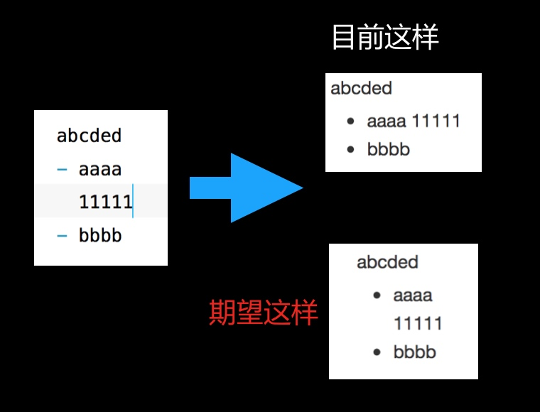

MWeb 3.0 测试版更新情况
MWeb 3.x 版升级及 2.x 版处理说明：
由于昨天把 Mac App Store 的 MWeb 改名为：MWeb （旧版），然后蛮多人问，现在关于 MWeb 3.0 版的升级情况统一说明如下：
- 新版首发半价 60 块，无意外的话，将在下周，具体日期还是没定（PS:我以为今天能定的）。
- 老用户也需要重新购买，都是统一半价，这个是由于 Mac App Store 对这种情况不友好。非 Mac App Store 购买的用户，如果是在 2018年5月1号 之后购买的，可以直接发邮件联系我更换为 3.0 版，注意是更换。
- MWeb 更新无法避免，买断的软件也不可能会免费更新，加上 MWeb 不贵，为了维持，必然要重新收费的。订阅方式的确是更合适，但是 MWeb 转成订阅至少会 10 块每月，所以新版用买断其实更优惠一点。反正不管怎么样，MWeb 3.0 版是买断制已成定局。
- 关于 MWeb 2.x 版，维护一般是兼容新系统。计划是会做简单维护，但是如果某天遇到兼容新系统难度太大，会直接下架。也就是说，现在还是可以购买旧版本的，而且一直可以。价格同样不变。
6/27 3.0.8 ～ 3.0.9 版
- 改进外部模式搜索，比如说按文件名搜索不到，全文搜索不到等。文档库的搜索也有改进。 PS: 搜索功能其实是还没做好的，但是，正式版上了之后再改进了。顺便说一句，编辑器改进也是，总之先上正式版。
- Markdown 解析改进：解析
xxx _abcd_ xxxx的结果多一个_ - 3.0.9 版：这个版本就修些 bug，调整一些细节。
PS: 如果你无法更新，或者更新有问题，请直接下载：下载(网址)
6/26 3.0.7 版
- 改进 About MWeb，增加贡献和感谢列表。
- 增加导入和导出发布服务。2.x 版 非 MAS 也已经发布并有这个功能了，所以说现在你可以把 2.x 版的发布服务导出，然后在 3.x 版中导入了。
- 修正 Markdown 解析任务列表时的 Bug。
- 修正工具栏按钮功能不匹配问题。
6/26 3.0.6 版
- 编辑器内显示图片的性能大幅提高，快速滑动不会卡了。
- 在 Retina 屏中用系统截屏再粘贴图片时，自动加上 Retina 宽度设定。
- 修正切换 tab 时焦点不在编辑器上的问题。
- 全键盘操作改进：增加焦点切换至搜索框（外部模式切换到目录树）快捷键：CMD + Shift + F，只记这一个，基本就可以在 “目录树 - 列表 - 编辑器” 这三处随意切换了。因为，在搜索框按 “Tab 键” 可以切换到编辑器，按 “向左键” 可以切换到目录树，按 “向下键” 可以切换到列表。加上焦点在列表可以按 “向左键” 切换到目录树，“向右键” 切换到编辑器；焦点在目录树可以按 “向右键” 切换到列表。另外切换 Tabs 可以使用 Ctrl + Tab 键，CMD + Shift + [或] 键，切换 Tab 时焦点会切到编辑器。还有快速搜索是 CMD + O。
- 全部中文化完成！
6/22 MWeb 3.0.5 版更新
- 新界面，由 @Funpee ：https://armgod.com 设计，感谢 @Funpee ！！
- 部分中文化（这版本的中文化决定用另外的方式以更好支持协作增加其它语言和修改，所以会比较慢。）
- 解析库有更新，支持如图的写法的正确解析，感谢 @randomatom ：https://github.com/randomatom/hoedown-mweb。
6/20 MWeb 3.0.3 版更新
- 重要：这个版本改成非 Sandbox 的了，非 Sandbox 的 App 有很多好处。目前 3.0.1 和 3.0.2 版本的都要重新设置一下文档库位置，这个按说明设置就好。
- 外部模式支持拖拽文件夹来引入，也支持拖拽文件夹到 App 图标来引入。
- 增加 mweb-default 样式，目前发布到印象笔记只会用这个样式。修正发布到印象笔记无代码高亮问题。
- 修正文档大纲显示不全的问题。
- 文档库的键盘导航改为：
- 如果焦点在列表： 左键可以切到 目录， 右键可以切到 编辑器；如果选中第一个，再按 向上键，会切到搜索框；如果选中的是最后一个，再按向下键，会切到 搜索框。
- 如果焦点在目录：右键可以切到列表；Tab 键可以切到 搜索框。
- 如果焦点在搜索框： 向下键可以切到列表并选中第一个，向上键可以切到列表并选中最后一个。
- url Scheme： mweblib://15287918142886 这种外部连接点击后可以调用 MWeb 打开了。
- 其它 Bug 修正。
- 预告：下个更新会有纯中文版。
6/14 MWeb 3.0.2 版更新
- 修正表格编辑问题
- 修正外部模式插入图片时不能自动上传至图床的 bug
- 修正外部模式树形导航增加文件不自动刷新问题。
- 优化文档库键盘导航设置：在分类区 按 Tab，焦点会跳到 中间的搜索框。而在中间的搜索框中：上下键为文章导航；左键切换到分类区 右键 切换到编辑区
- Markdown 解析库有更新
- 修正选择文本并按 Tab 键缩进时闪退的 bug。